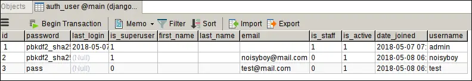
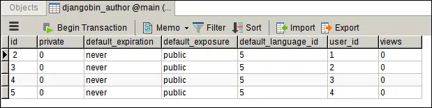
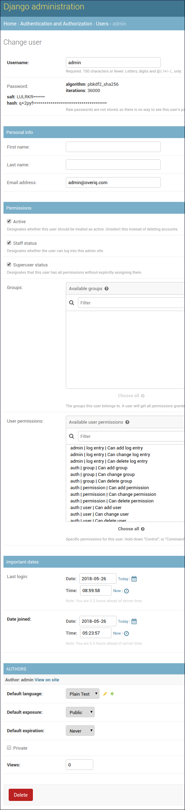

Django Authentication Framework Basics
Last updated on July 27, 2020
Django authentication (or auth) app provides a wide array of tools for User management ranging from authenticating users to resetting passwords.
The auth app is quite big. It consists of URL patterns, views, forms, decorators, models, middlewares etc. To make things simple and easy to follow our discussion will be limited to the following topics:
UsermodelAnonymousUsermodel- Password hashing system
- Login/Logout users
- Creating Users
- Change Password
- Reset Password
- Restricting Access
- Extending
Usermodel
We will start with the basics and then move on to more complex topics in later chapters.
Setting Up Authentication Framework #
The authentication framework is implemented as 'django.contrib.auth' app but it also depends upon on 'django.contrib.contenttype' app and some middlewares to work correctly.
Open settings.py file and make sure you have 'django.contrib.auth' and
'django.contrib.contenttype' in the INSTALLED_APPS list as follows:
djangobin/django_project/django_project/settings.py
1 2 3 4 5 6 7 8 9 10 11 | #...
INSTALLED_APPS = [
'django.contrib.admin',
'django.contrib.auth',
'django.contrib.contenttypes',
'django.contrib.sessions',
'django.contrib.messages',
'django.contrib.staticfiles',
'djangobin',
]
#...
|
If you are adding 'django.contrib.auth' and 'django.contrib.contenttype' right now, run ./manage.py migrate command. This command will create necessary tables in the database.
So what is django.contrib.contenttype ?
The django.contrib.contenttype app is used to keep track of different types of content in the project. This app has advanced use cases, so we won't be covering it in this beginner tutorial.
Django auth app also uses sessions behind the scenes. As a result, you must have the following two middlewares in the MIDDLEWARE list in settings.py.
django.contrib.sessions.middleware.SessionMiddlewaredjango.contrib.auth.middleware.AuthenticationMiddleware
The django.contrib.sessions.middleware.SessionMiddleware is responsible for generating unique Session IDs. And the django.contrib.auth.middleware.AuthenticationMiddleware adds an attribute named user to the request object. The utility of this will become clear in the upcoming sections.
Finally, MIDDLEWARE list should look like this:
djangobin/django_project/django_project/settings.py
1 2 3 4 5 6 7 8 9 10 11 | #...
MIDDLEWARE = [
'django.middleware.security.SecurityMiddleware',
'django.contrib.sessions.middleware.SessionMiddleware',
'django.middleware.common.CommonMiddleware',
'django.middleware.csrf.CsrfViewMiddleware',
'django.contrib.auth.middleware.AuthenticationMiddleware',
'django.contrib.messages.middleware.MessageMiddleware',
'django.middleware.clickjacking.XFrameOptionsMiddleware',
]
#...
|
Type of Users #
Django has two types of users:
- AnonymousUser
- User
AnonymousUser #
A user who is not logged in to the application is called an AnonymousUser. For example, a regular user who comes to our site to consume content is an AnonymousUser. This type of users is represented using the AnonymousUser model.
User #
A user who is logged in to the application is called a User. This type of users is represented using the User model.
The AnonymousUser model is not much used apart from the web requests but the User model is used in a number of places. Consequently, we will spend most of our time with the User mode. The following section explains everything you need to know about the User model.
The User Model #
The User model is considered as the heart of Django authentication framework. We use User model to store data of application users. To use it you must first import it from
django.contrib.auth.models.
1 2 3 | >>>
>>> from django.contrib.auth.models import User
>>>
|
Creating a User object #
Django provides a custom method on objects manager named create_user() to create users. It accepts at-least three parameters username, password, and email.
1 2 3 4 5 6 7 8 9 10 11 12 | >>>
>>> u = User.objects.create_user(
... 'noisyboy',
... 'noisyboy@mail.com',
... 'password'
... )
>>>
>>>
>>> u
<User: noisyboy>
>>>
>>>
|
The following table lists all the fields of the User model.
| Attribute | Description |
|---|---|
username |
A required, 30 character field to store username. It can only take alphanumeric characters i.e letters, digits and underscores. |
password |
A required field to store password. |
first_name |
An optional field of 30 characters to store user's first_name. |
last_name |
An optional field of 30 characters to store user's last_name. |
email |
An optional field to store email address. |
is_active |
A boolean field which tells whether the account can be used to login or not. |
is_superuser |
A boolean field if set to True, the user has full permission to perform any CRUD(create, read, update and delete) operation in the Django admin site. |
is_staff |
A boolean field if set to True, the user can access Django admin site but can't perform any CRUD operation until given explicit permissions. By default, for superusers (users whose is_superuser attribute is True) the is_staff is also True. |
date_joined |
A field to store date and time when the account was created. This is field is automatically filled with the current date and time when the account is created. |
last_login |
A field containing the date and time of the last login. |
The create_user() method creates a non-superuser with is_staff attribute set to True. This means that the user can login into the Django admin site but can't perform any CRUD operation. To create a superuser use create_superuser() method which works exactly like create_user() but creates a superuser.
To get the field values of the newly created User instance execute the following query:
1 2 3 4 5 6 7 8 9 10 11 12 13 14 15 16 17 | >>>
>>> User.objects.filter(username='noisyboy').values()
<QuerySet
[{
'username': 'noisyboy',
'password': 'pbkdf2_sha256$36000$JuRTV4Vec59R$ueTUvEcLH/i/eESGTIiwk7O3iEZfW+BtpnhCmtpYK48=',
'is_staff': False,
'first_name': '',
'id': 2,
'email': 'noisyboy@mail.com',
'last_name': '',
'is_active': True,
'is_superuser': False,
'last_login': None,
'date_joined': datetime.datetime(2018, 4, 3, 4, 51, 8, 674638, tzinfo=<UTC>)
}]>
>>>
|
As you can see, currently the noisyboy is not a superuser. We can easily change that by setting is_superuser attribute to True and then calling the save() method:
1 2 3 4 5 6 7 | >>>
>>> u.is_superuser = True
>>>
>>> u.is_superuser
True
>>> u.save()
>>>
|
Another thing to notice here is that the value of password field in the output of the preceding query. It looks something like this:
'password': 'pbkdf2_sha256$36000$JuRTV4Vec59R$ueTUvEcLH/i/eESGTIiwk7O3iEZfW+BtpnhCmtpYK48=',
Recall that while creating noisyboy user we have used the string "password" as account password. So how come it becomes so long?
It is a common security measure to not to store passwords as plain text into the database. Instead, we use a mathematical function which converts our password into a long string like the one above. Such function is called a hash function and the long string it returns is called a password hash. The idea behind the hash function is this - creating password hash from a password is easy, but the reverse process is not possible.
By default, Django uses PBKDF2 algorithm to create password hashes.
This is the reason why we used create_user() method to create User object instead of create() or bulk_create() method. The create_user() method automatically converts a password to a hash. If we had used create() or bulk_create() method, it would have saved the password as plain text into the database. We can verify this by creating a new user using the create() method as follows:
1 2 3 4 5 6 7 8 9 10 11 | >>>
>>> test_user = User.objects.create(
... username='test',
... email='test@mail.com',
... password='pass'
... )
>>>
>>>
>>> test_user.password
'pass'
>>>
|
Django stores the user data in the auth_user table. After executing the above code the auth_user table should look like this:

Here are some of the methods supplied by the User model:
| Method | Description |
|---|---|
get_username() |
returns username of the user. To get the username you should use this property instead of directly referencing the username attribute. |
get_full_name() |
returns the value of first_name and last_name attribute with a space in between |
check_password(pass) |
It returns True if string passed is the correct password, otherwise False. It first converts the password to password hash then compares it to the one saved in the database. |
set_password(passwd) |
It is used to change the password of the user. It takes care of password hashing. Note that set_password() doesn't save the User object, you have to call save() method to commit the changes to the database. |
is_authenticated() |
return True if user is authenticated (logged in), otherwise False. |
is_anonymous() |
returns True if the user is anonymous, otherwise False. |
get_username() #
1 2 3 4 5 6 | >>>
>>> u.get_username()
'noisyboy'
>>> u.get_full_name()
''
>>>
|
check_password() #
1 2 3 4 5 6 | >>>
>>> u.check_password("mypass")
False
>>> u.check_password("password")
True
>>>
|
set_password() #
1 2 3 | >>>
>>> u.set_password("pass")
>>>
|
To commit the changes call the save() method.
1 2 3 | >>>
>>> u.save()
>>>
|
is_authenticated() #
1 2 3 4 | >>>
>>> u.is_authenticated()
True
>>>
|
Here, the is_authenticated() method returns True. It doesn't mean that the noisyboy is currently logged in to the Django admin site. In fact, inside the Django shell, is_authenticated() when used on User instances always returns True. We can verify this fact by creating a new user and then checking the return value of is_authenticated() method.
1 2 3 4 5 6 7 8 9 10 | >>>
>>> new_user = User.objects.create_user(
... 'newtestuser',
... 'newtestuser@mail.com',
... 'pass'
... )
>>>
>>> new_user.is_authenticated()
True
>>>
|
Inside Django Shell is_authenticated() is useless. Its real utility comes into play in views and templates, as we will see in the subsequent lessons.
is_anonymous() #
1 2 3 4 | >>>
>>> u.is_anonymous()
False
>>>
|
The object u is an instance of User class that's why is_anonymous() returns False.Had it belong to the AnonymousUser class, it would have returned True.
AnonymousUser Model #
Django has another model called AnonymousUser which represents users which are not logged in. In other words, the regular users which come to our site to consume content are AnonymousUser. The AnonymousUser model has almost the same methods and fields as that of User model with the following difference.
idorpkattribute always containsNone.usernameattribute will always be an empty string i.e''.is_anonymous()isTrueinstead ofFalse.is_authenticated()isFalseinstead ofTrue.is_staffandis_superuserattributes will be always beFalse.is_activewill always beFalse.- Calling
save()ordelete()onAnonymousUserobject will raiseNotImplementedErrorexception.
It is important to note that AnonymousUser model doesn't have any kind of relationship with User model. It is a separate class with its own methods and fields. The only similarity between User and AnonymousUser model is that most of the fields and methods are same. It is not a design flaw, It is done on purpose to make things easier.
Earlier in this chapter, we have discussed that
django.contrib.auth.middleware.AuthenticationMiddleware middleware adds a user attribute to the request object. The request.user returns either an instance of AnonymousUser or User model. Because both User and AnonymousUser class implement the same interface, we can use the same fields and methods to get the relevant information without worrying about the actual type of object.
The following example perfectly describes how we can use this behavior to our advantage. The test_logged_on_or_not() view tests whether the user is logged in or not using the is_authenticated() method. We are able to write this code because is_authenticated() is implemented in the AnonymousUser model as well as in the User model.
1 2 3 4 5 | def test_logged_on_or_not(request):
if request.user.is_authenticated():
return HttpResponse("You are logged in.")
else:
return redirect("login")
|
This is how the above code works:
If is_authenticated() method returns True then the user will be greeted with "You are logged in." response. Otherwise, the user will be redirected to the login page.
In practice, you would probably never need to create an object of type AnonymousUser. Just in case, you are curious, the following code shows you how to do so.
1 2 3 4 | >>>
>>> from django.contrib.auth.models import AnonymousUser
>>> au = AnonymousUser()
>>>
|
Once we have access to AnonymousUser instance we can use any fields or methods to get any relevant information.
1 2 3 4 5 6 7 8 9 10 11 12 13 14 15 16 17 18 19 20 21 22 23 24 25 26 27 28 29 30 31 32 | >>>
>>> print(au.id)
None
>>> print(au.pk)
None
>>>
>>> au.username
''
>>>
>>> au.is_authenticated()
False
>>>
>>> au.is_anonymous()
True
>>>
>>> au.is_active
False
>>>
>>> au.is_superuser
False
>>>
>>>
>>> au.delete()
...
NotImplementedError: Django doesn't provide a DB representation for AnonymousUser.
>>>
>>>
>>> au.save()
Traceback (most recent call last):
...
NotImplementedError: Django doesn't provide a DB representation for AnonymousUser.
>>>
|
As described earlier, calling save() or delete() on AnonymousUser object raises NotImplementedError exception.
Extending User Model #
Django only provides bare minimum fields in the User model to get you started, but it also gives you full power to extend the User model to suit your application needs.
Recall that by default the User model contains the following fields:
- username
- first_name
- last_name
- password
- last_login
- is_active
- is_staff
- is_superuser
- date_joined
At this point, you might be wondering if User model is used to store user information then what the point of defining the Author model.
If that's what you thought. You are right.
All the fields of the Author model also exist in the User model. That means we don't really need Author model at all.
But what if we want to store some additional data about the user? like date of birth, favorite car, maiden name, etc;
To store additional data about user we have to extend our User model.
The first step in extending the User model is to create a new model with all the additional fields you want to store. Next, to associate our new model with the User model define a OneToOneField field containing a reference to the User model in our new model.
In our case, we want to store the following information about the user:
| Field | Description |
|---|---|
default_language |
Default Language for creating a snippet |
default_exposure |
Default exposure (i.e public, private and unlisted) |
default_expiration |
Default expiration time (i.e never, 1 week, 1 month, 6 month, 1 year) |
private |
A boolean field which denotes whether other users can view this profile or not |
views |
An integer field to store the number of visits to the profile page. |
In anticipation of the changes we are going to make on the Author model, let's perform some database clean up. Right now, there are some users in the djangobin_author table which are independent of the User model. To avoid conflicts, it would be best to delete all the Author objects from the database. Note that deleting authors will also delete all the snippets associated with them.
1 2 3 4 5 6 7 | >>>
>>> from djangobin.models import *
>>>
>>> Author.objects.all().delete()
(17, {'djangobin.Author': 4, 'djangobin.Snippet': 7, 'djangobin.Snippet_tags': 6})
>>>
>>>
|
Note: It is not always possible to delete data from the tables. That's why you should plan your database properly before you start writing the application.
We can now make changes to the Author model. Open models.py and delete the Author model. Below the Language model re-define the new Author model as follows:
djangobin/django_project/djangobin/models.py
1 2 3 4 5 6 7 8 9 10 11 12 13 14 15 16 17 18 19 20 21 22 23 24 25 26 27 28 29 30 31 32 33 34 35 36 37 38 39 40 41 42 43 44 | #...
from django.contrib.auth.models import User
from .utils import Preference as Pref
class Language(models.Model):
#...
def get_default_language():
lang = Language.objects.get_or_create(
name='Plain Text',
lang_code='text',
slug='text',
mime='text/plain',
file_extension='.txt',
)
return lang[0].id
class Author(models.Model):
user = models.OneToOneField(User, related_name='profile')
default_language = models.ForeignKey(Language, on_delete=models.CASCADE,
default=get_default_language)
default_exposure = models.CharField(max_length=10, choices=Pref.exposure_choices,
default=Pref.SNIPPET_EXPOSURE_PUBLIC)
default_expiration = models.CharField(max_length=10, choices=Pref.expiration_choices,
default=Pref.SNIPPET_EXPIRE_NEVER)
private = models.BooleanField(default=False)
views = models.IntegerField(default=0)
def __str__(self):
return self.user.username
def get_absolute_url(self):
return reverse('djangobin:profile', args=[self.user.username])
def get_snippet_count(self):
return self.user.snippet_set.count()
class Snippet(models.Model):
#...
|
There is nothing new here, except how we are setting the default value of the default_language field. For the first time, we are using a callable to set the default value. The callable is called every time a new Author instance is created.
The callable uses a new method of objects manager called get_or_create(). The get_or_create() method is an amalgamation of get() and create() method. It first checks whether a matching object exists in the database or not, if it doesn't it creates one.
The get_or_create() method returns a tuple of the form (object, created), where object refers to the retrieved or created instance and created is a boolean value specifying whether a new object is created or not.
The callable returns the primary key of the language whose name is Plain Text. The Plain Text will be used to create snippet without any highlighting.
The default values and choices for default_language and default_expiration fields is coming from the Preference class we defined in lesson Basics of Models in Django
Next, create a new migration file using ./manage.py makemigrations command and you will get a prompt like this:
1 2 | $ ./manage.py makemigrations
Did you rename author.active to author.private (a BooleanField)? [y/N] n
|
Enter N or n, to proceed. After that you will receive another prompt:
1 2 3 4 5 | You are trying to add a non-nullable field 'user' to author without a default; we can't do that (the database needs something to populate existing rows).
Please select a fix:
1) Provide a one-off default now (will be set on all existing rows with a null value for this column)
2) Quit, and let me add a default in models.py
Select an option:
|
The issue is that we are trying to add a foreign key with UNIQUE and NOT NULL constraint to the djangobin_author table. Django thinks that there might be some rows in djangobin_author table and needs to know what to fill in the foreign key(user) column of these rows. Although, there are no actual authors in the djangobin_author table but Django is completely unaware of this.
Let's select option 1 and provide a one-off default value of None:
1 2 3 4 5 6 7 8 9 10 11 12 13 14 15 16 17 18 19 20 21 22 | Please select a fix:
1) Provide a one-off default now (will be set on all existing rows with a null value for this column)
2) Quit, and let me add a default in models.py
Select an option: 1
Please enter the default value now, as valid Python
The datetime and django.utils.timezone modules are available, so you can do e.g. timezone.now
Type 'exit' to exit this prompt
>>> None
Migrations for 'djangobin':
djangobin/migrations/0013_auto_20180403_1059.py
- Change Meta options on tag
- Remove field active from author
- Remove field created_on from author
- Remove field email from author
- Remove field last_logged_in from author
- Remove field name from author
- Add field default_expiration to author
- Add field default_exposure to author
- Add field default_language to author
- Add field private to author
- Add field user to author
- Add field views to author
|
Finally, commit the migration using the migrate command:
1 2 3 4 5 | $ ./manage.py migrate
Operations to perform:
Apply all migrations: admin, auth, contenttypes, djangobin, sessions
Running migrations:
Applying djangobin.0013_auto_20180404_0457... OK
|
Keep in mind that extending the User model doesn't mean that the associated Author instance will be created automatically every time a new User instance is created. You can create the Author instance either using Django ORM or from the Django admin site.
To automatically trigger the creation of Author instance whenever a User instance is created, we can use Signals. We will discuss how to do that later in this chapter.
Furthermore, the User instances which already exists in the database doesn't have the associated Author instance. This will result in an error if you try to login with these accounts in the finished version of the application. We can easily fix this issue by creating Author for each User instance using the following code:
1 2 3 4 5 6 7 8 9 10 11 12 13 14 15 16 17 18 | >>>
>>> from django.contrib.auth.models import User
>>> from djangobin.models import *
>>>
>>> ul = User.objects.all()
>>>
>>> ul
<QuerySet [<User: admin>, <User: noisyboy>, <User: test>, <User: newtestuser>]>
>>>
>>> for u in ul:
... Author.objects.get_or_create(user=u)
...
(<Author: admin>, True)
(<Author: noisyboy>, True)
(<Author: test>, True)
(<Author: newtestuser>, True)
>>>
>>>
|
After executing the preceding code, djangobin_author table will look like this:

Before we move on to the next section, let's replace the foreign key author of the Snippet model with the foreign key to the User model, as follows:
djangobin/django_project/djangobin/models.py
1 2 3 4 5 6 7 8 9 10 11 12 13 14 15 16 17 18 19 20 21 22 | #...
class Snippet(models.Model):
title = models.CharField(max_length=200, blank=True)
original_code = models.TextField()
highlighted_code = models.TextField(blank=True, help_text="Read only field. Will contain the"
" syntax-highlited version of the original code.")
expiration = models.CharField(max_length=10, choices=Pref.expiration_choices)
exposure = models.CharField(max_length=10, choices=Pref.exposure_choices)
hits = models.IntegerField(default=0, help_text='Read only field. '
'Will be updated after every visit to snippet.')
slug = models.SlugField(help_text='Read only field. Will be filled automatically.')
created_on = models.DateTimeField(auto_now_add=True)
language = models.ForeignKey(Language, on_delete=models.CASCADE)
user = models.ForeignKey(User, on_delete=models.CASCADE)
tags = models.ManyToManyField('Tag', blank=True)
class Meta:
ordering = ['-created_on']
#...
|
Next, update SnippetAdmin class in admin.py to use the user field as follows:
djangobin/django_project/djangobin/admin.py
1 2 3 4 5 6 7 8 9 10 11 12 13 14 15 16 | #...
class SnippetAdmin(admin.ModelAdmin):
list_display = ('language','title', 'expiration', 'exposure', 'user')
search_fields = ['title', 'user']
ordering = ['-created_on']
list_filter = ['created_on']
date_hierarchy = 'created_on'
# filter_horizontal = ('tags',)
raw_id_fields = ('tags',)
readonly_fields = ('highlighted_code', 'hits', 'slug', )
fields = ('title', 'original_code', 'highlighted_code', 'expiration', 'exposure',
'hits', 'slug', 'language', 'user', 'tags')
#...
|
To create a new a migration run ./manage.py makemigrations djangobin command and provide a one-off value of None.
1 2 3 4 5 6 7 8 9 10 11 12 13 14 | $ ./manage.py makemigrations djangobin
You are trying to add a non-nullable field 'user' to snippet without a default; we can't do that (the database needs something to populate existing rows).
Please select a fix:
1) Provide a one-off default now (will be set on all existing rows with a null value for this column)
2) Quit, and let me add a default in models.py
Select an option: 1
Please enter the default value now, as valid Python
The datetime and django.utils.timezone modules are available, so you can do e.g. timezone.now
Type 'exit' to exit this prompt
>>> None
Migrations for 'djangobin':
djangobin/migrations/0006_auto_20180616_0826.py
- Remove field author from snippet
- Add field user to snippet
|
Finally, commit the migration by typing:
1 2 3 4 5 | $ ./manage.py migrate djangobin
Operations to perform:
Apply all migrations: djangobin
Running migrations:
Applying djangobin.0006_auto_20180616_0826... OK
|
Displaying Author model with the User model #
If you visit Django admin site, you will find that the User and Author models are being displayed on their own separate page. Since Author model is just an extension of the User model, it would be much better if we display the data from the Author model alongside the User model. To do so, we have to make some changes in the admin.py file of the djangobin app.
There are two ways to represent models in the Django admin site:
- ModelAdmin
- InlineModelAdmin
We have already seen how ModelAdmin works in the Django admin app chapter. The InlineModelAdmin allows us to edit parent and child model on the same page. There are two subclasses of InlineModelAdmin:
- TabularInline
- StackedInline
These classes control the layout of the model fields in the Django admin site. The former displays the fields in tabular form whereas the latter displays the fields in the stacked form (one field per line).
To display fields of Author model along with the fields of User model, define an InlineModelAdmin (either using TabularInline or StackedInline) in app's admin.py file and add it to UserAdmin class which register the User class in the Django admin. Finally, unregister the old User model and register it again with the changes.
djangobin/django_project/djangobin/admin.py
1 2 3 4 5 6 7 8 9 10 11 12 13 14 15 16 17 18 19 20 21 22 23 24 25 26 27 | from django.contrib import admin
from django.contrib.auth.admin import UserAdmin
from django.contrib.auth.models import User
from . import models
#...
class TagAdmin(admin.ModelAdmin):
list_display = ('name', 'slug',)
search_fields = ('name',)
# prepopulated_fields = {'slug': ('name',)}
readonly_fields = ('slug',)
class AuthorInline(admin.StackedInline):
model = models.Author
class CustomUserAdmin(UserAdmin):
inlines = (AuthorInline, )
admin.site.unregister(User) # unregister User model
admin.site.register(User, CustomUserAdmin) # register User model with changes
admin.site.register(models.Language, LanguageAdmin)
admin.site.register(models.Snippet, SnippetAdmin)
admin.site.register(models.Tag, TagAdmin)
|
Note that we have removed the line (admin.site.register(models.Author)) which registers the Author model in the Django admin site.
Save the file and visit Change user page. You should see a page like this:

In the next, section we will learn how we can use signals to automatically trigger the creation of Author object whenever a User is created.
Django Signals #
Think of Signals as events in JavaScript which allows us to listen for actions and do something about it.
The following table lists some commonly used signals:
| Signal | Description |
|---|---|
django.db.models.signals.pre_save |
sent before a model's save() method is called |
django.db.models.signals.post_save |
sent after a model's save() method is called |
django.db.models.signals.pre_delete |
sent before a model's delete() method or QuerySet's delete() method is called |
django.db.models.signals.post_delete |
sent after a model's delete() method or QuerySet's delete() method is called |
django.core.signals.request_started |
sent when Django starts processing an HTTP request. |
django.core.signals.request_finished |
sent when Django finishes processing an HTTP request. |
For our purpose, we are want to get notified whenever a User instance is saved so that we can create the associated Author object. This means we are interested in listening to the post_save signal from the User model.
Once we know the signal we want to listen to, the next step is to define a receiver. A receiver can be a Python function or method which gets called whenever the signal is sent. The receiver function contains the logic we want to execute. Every receiver function must accept two arguments, sender and **kwargs.
The sender parameter contains the sender of the signal and **kwargs contains some relevant information pertaining to the signal sender. Two common pieces of information sent by the post_save signal are:
instance- a copy of the saved instance.created- A boolean, designating whether the object was created or updated.
The post_save signal send out many other arguments, but for our purpose, these two will suffice. Open models.py and add receiver function just below the Author class as follows:
djangobin/django_project/djangobin/models.py
1 2 3 4 5 6 7 8 9 10 11 12 | #...
class Author(models.Model):
#...
def get_snippet_count(self):
return self.user.snippet_set.count()
def create_author(sender, **kwargs):
if kwargs.get('created', False):
Author.objects.get_or_create(user=kwargs.get('instance'))
|
With the receiver function in place. The next step is to connect the receiver to a signal. We do this, with the help of receiver decorator. The receiver decorator accepts a signal or a list of signals to connect to and optional keyword arguments to popular kwargs parameter in the receiver function. Update models.py to use receiver decorator as follows:
djangobin/django_project/djangobin/models.py
1 2 3 4 5 6 7 8 9 10 11 12 13 14 15 | #...
from django.contrib.auth.models import User
from django.dispatch import receiver
from django.db.models.signals import post_save
from .utils import Preference as Pref
# Create your models here.
#...
@receiver(post_save, sender=User)
def create_author(sender, **kwargs):
if kwargs.get('created', False):
Author.objects.get_or_create(user=kwargs.get('instance'))
|
The create_author() function will only be called when a User instance is saved.
If you now create a new User instance, the associated Author instance will be created automatically.
1 2 3 4 5 6 7 8 9 10 11 12 13 14 15 16 17 18 19 20 21 22 23 | >>>
>>>
>>> u = User.objects.create(
... username='foo',
... email='foo@mail.com',
... password='password'
... )
>>>
>>> u
<User: foo>
>>>
>>> u.profile ## access Author instance
<Author: foo>
>>>
>>>
>>> u.profile.default_language
<Language: Plain Text>
>>>
>>>
>>> u.profile.private
False
>>>
>>>
|
Load Comments